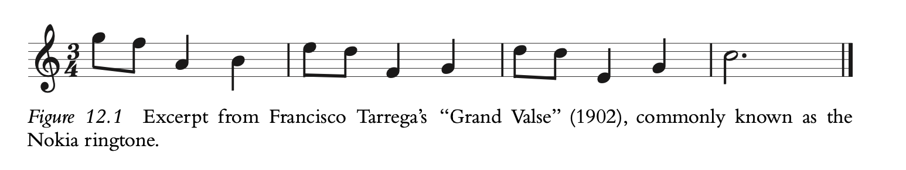
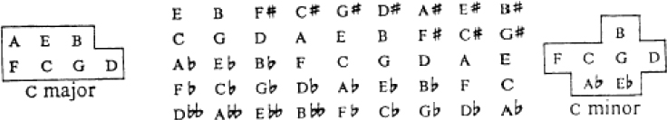
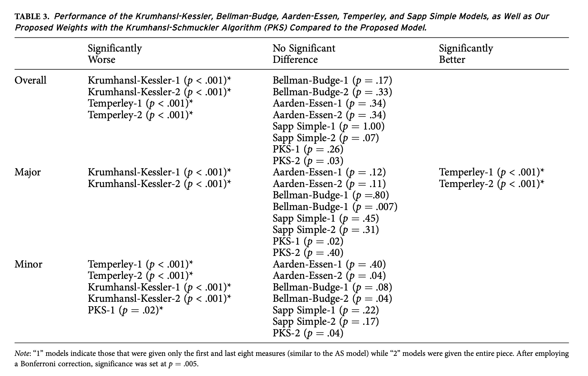
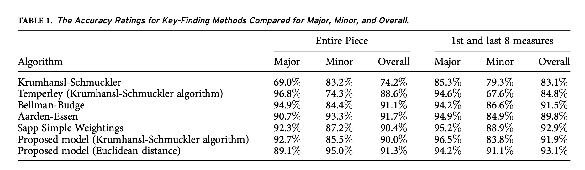
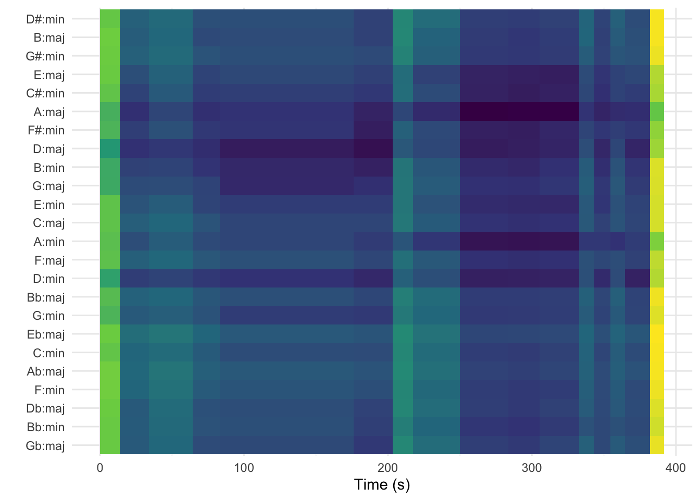
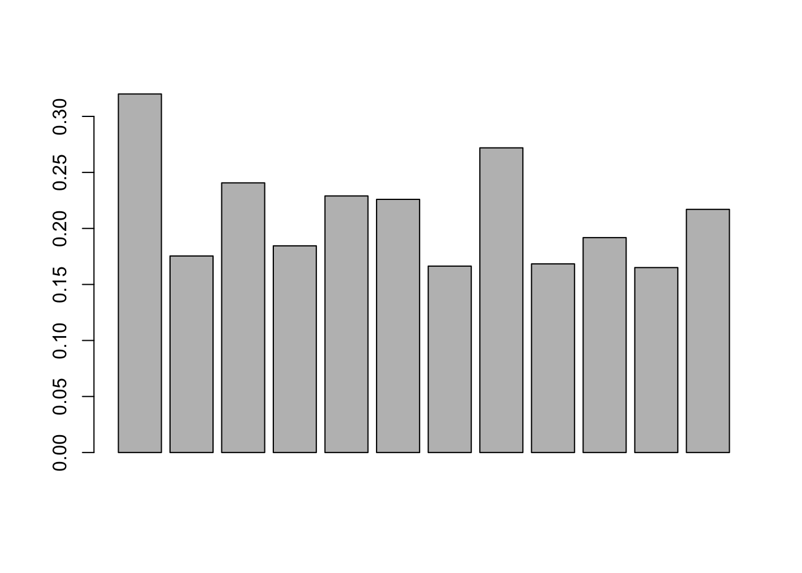
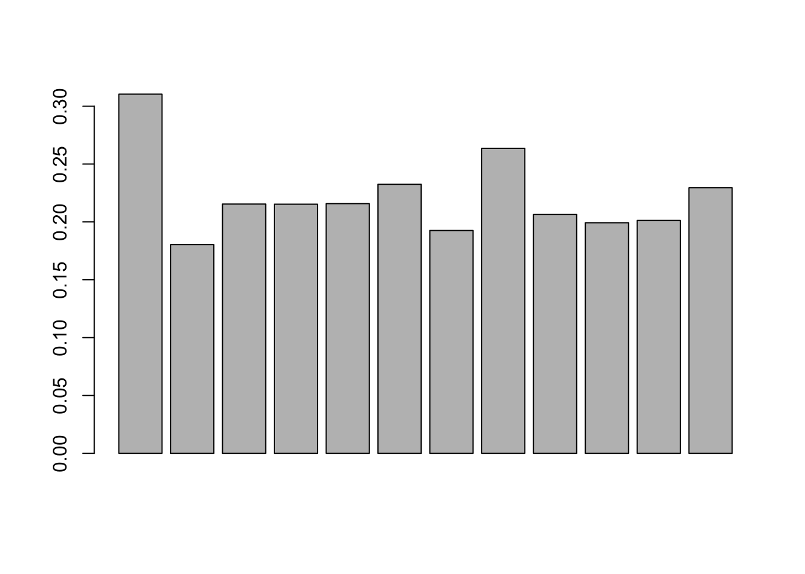
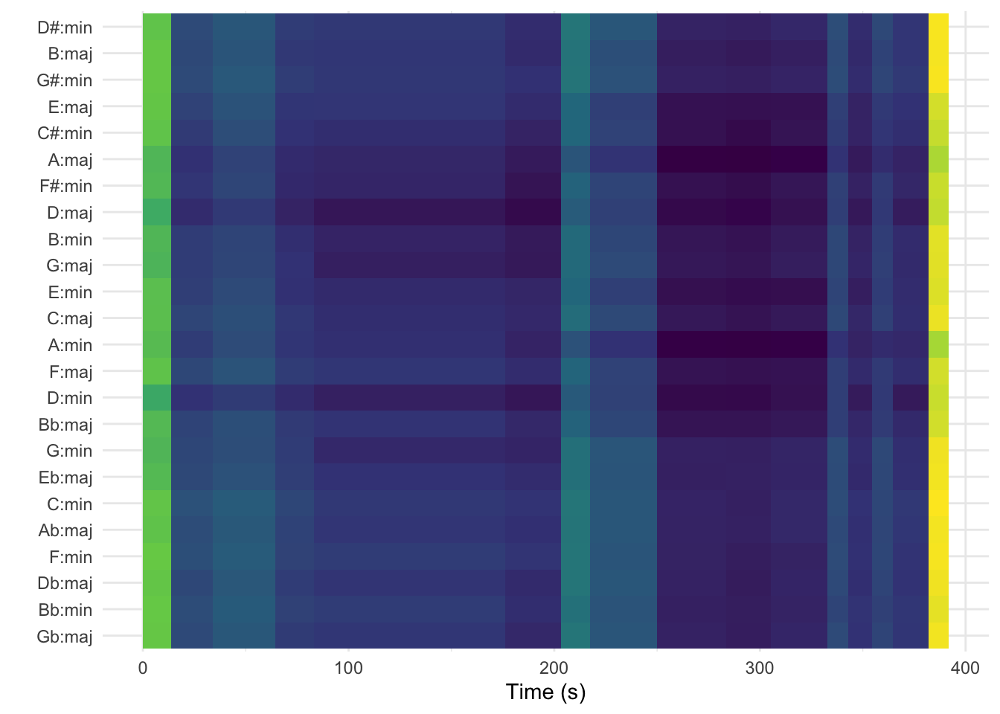
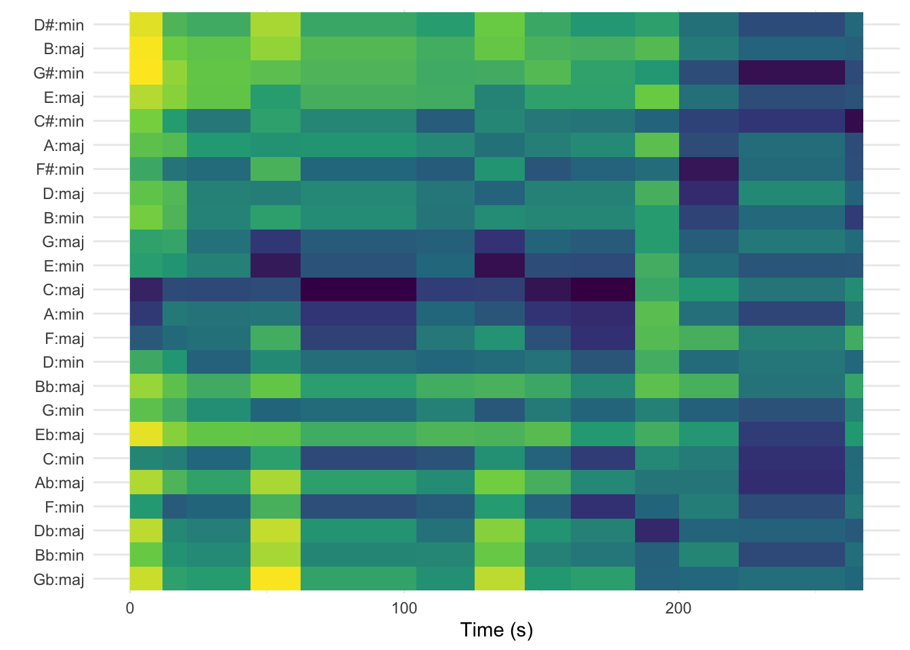

Week 4: Conceptual Debates: Key-Finding
Monday
- talk about key-finding
- play with the different weightings
- what would it look like to devise your own key-finding algorithm?
Why is Key-Finding Interesting?
When we hear this ringtone, it sounds as though it’s in C, but why?

It doesn’t begin with C, it begins with G.
C isn’t the most common note–in fact, it only occurs once before the final bar, and it’s on the “and” of 2 in the third measure (a pretty weak position metrically).
Is a key just whatever key the piece ends in? If we ended this on A, would it sound like it’s in A minor? It would be the same key signature, and we’d actually have a nice cadential ascent to the final A from the G in the third measure.
So what gives? Why do we hear this as being in C?
Perhaps a follow-up question might simply be: what makes us hear something as being in a key?
A Brief History of Key Finding
Longuet-Higgins and Steedman
This approach used what we might call an exclusionary approach, eliminating different key possibilities as pitch classes were introduced over the course of a musical passage.
For example, with the Nokia theme, the opening G would fit into seven major keys (G, C, D, F, B-flats, A-flat, E-flat;); six of those keys would include the opening two notes; and three of those six would still be possible when presented with the first three notes. By the end of the first measure, however, the only major key that would encompass all four melody notes would be C major. If more than one key was still available however, the algorithm would place more weight on the pitches present at the start of the piece. This worked quite well on pieces that were overtly tonal, but it was less effective for pieces that contained non-diatonic pitches (which is most pieces!)

The Krumhansl-Schmuckler Key-Finding Weightings
As you might guess, the Longuet-Higgins and Steedman would miss a lot of musical instances. For example, pieces that have non-harmonic chords would struggle, as would pieces that had a lot of chromatic ornamentations. Ideally an algorithm would allow for these pitches to occur, but acknowledge that pitches in the key might be a better fit than those outside of the key, and that certain pitches in the key should be more heavily weighted than others.
Carol Krumhansl and Mark Schmuckler (Krumhansl, 1990) would devise an algorithm that tallied up the pitch classes of an excerpt and compared the distribution of these pitch classes to ratings from an earlier probe-tone experiment. (Krumhansl and Kessler, 1982). The weightings can be seen below.
We might think of this as a correlational approach. We tally up all of the pitches in a corpus, and then run a correlation on this key-profile. We run this over all of the keys, and the one that best fits is then labeled as “the key”.
ks_major_key <-
c(6.35,
2.23,
3.48,
2.33,
4.38,
4.09,
2.52,
5.19,
2.39,
3.66,
2.29,
2.88)
ks_minor_key <-
c(6.33,
2.68,
3.52,
5.38,
2.60,
3.53,
2.54,
4.75,
3.98,
2.69,
3.34,
3.17)An interesting distinction here is that of experiment-derived vs. corpus-derived weightings. Should a key-finding algorithm intend to match how we hear key in a controlled lab environment (with basic harmonic progression stimuli), or should they use real music as a starting point? If they use real music, which music?
Bellman-Budge Profiles
Hector Bellman created a key-finding algorithm that used Helen Budge’s dissertation from the 1940s as a starting point. Budge tallied up note occurrences in composers from the classical music canon, looking at the tonal makeup of a large collection of pieces. Bellman then used these frequencies as the starting point for his own key-finding algorithm.
major <- c(16.80,
0.86,
12.95,
1.41,
13.49,
11.93,
1.25,
20.28,
1.80,
8.04,
0.62,
10.57)
minor <- c(18.16,
0.69,
12.99,
13.34,
1.07,
11.15,
1.38,
21.07,
7.49,
1.53,
0.92,
10.21)The Temperley (Kostka-Payne Corpus)
David Temperley (2001) also employed Western classical music as a starting point for his early key-finding work (not to be confused with his more dynamic Bayesian-informed later work). He used examples from a commonly used music theory textbook (Stefan Kostka and Dorothy Payne’s Tonal Harmony).
major <- c(0.748,
0.060,
0.488,
0.082,
0.670,
0.460,
0.096,
0.715,
0.104,
0.366,
0.057,
0.400)
minor <- c(0.712,
0.084,
0.474,
0.618,
0.049,
0.460,
0.105,
0.747,
0.404,
0.067,
0.133,
0.330)Aarden’s Folk Song Key-Profiles
Bret Aarden (2003) argued that folk music would be a better fit than those generated from classical music. He used the Essen Folksong collection (consisting of thousands of folksongs throughout Europe, although with an uneven balance toward German folksong), to come up with the weightings below.
major <- c(17.7661,
0.145624,
14.9265,
0.160186,
19.8049,
11.3587,
0.291248,
22.062,
0.145624,
8.15494,
0.232998,
4.95122)
minor <- c(18.2648,
0.737619,
14.0499,
16.8599,
0.702494,
14.4362,
0.702494,
18.6161,
4.56621,
1.93186,
7.37619,
1.75623)Sapp’s Simple Weightings
Craig Sapp argued that we probably didn’t even need to get frequencies from corpora or experiments. If we just assume that the tonic and the dominant (scale degrees 1 and 5) are the most important, and the other pitches in the key are less important, but more important than those not in the key, then we have a pretty simple weighting system (that works quite well!).
major <- c(2, 0, 1, 0, 1, 1, 0, 2, 0, 1, 0, 1)
minor <- c(2, 0, 1, 1, 0, 1, 0, 2, 1, 0, 0.5, 0.5)Albrecht and Shanahan (2013)
Josh Albrecht and I tried our hands at this problem, and picked a set of classical works from the Humdrum corpus, looking at only the first and last eight measures of each. The numbers are below.
major <- c(0.238,
0.006,
0.111,
0.006,
0.137,
0.094,
0.016,
0.214,
0.009,
0.080,
0.008,
0.081)
minor <- c(0.220,
0.006,
0.104,
0.123,
0.019,
0.103,
0.012,
0.214,
0.062,
0.022,
0.061,
0.052)We also tried a Euclidean distance approach, rather than a correlational approach.
We tried to explain it as follows:
In a two-dimensional space, if there were 70% of pitch X and 30% pitch Y, the Cartesian location of the point representing this pitch-class distribution would be at X 1⁄4 0.7 and Y 1⁄4 0.3. In this case, we are examining the distribution of 12 pitch classes, resulting in a 12-dimensional Cartesian space. The pitch-class distribution of each piece is represented by a point in that 12-dimensional space. The distance is then measured between this point and the 24 points representing the 12 major and 12 minor key pitch-class distributions, and the key separated by the shortest distance is taken to be the key of the work.
Below is a table comparing how well this did to the others.

How do they each perform on a corpus of classical music?
They each perform a bit differently on different types of tasks.

corrplot 0.92 loadedcircshift <- function(v, n) {
if (n == 0) v else c(tail(v, n), head(v, -n))
}
#
# # ### uses the Krumhansl Schmuckler Profiles
major_key <- c(6.35, 2.23, 3.48, 2.33, 4.38, 4.09, 2.52, 5.19, 2.39, 3.66, 2.29, 2.88)
minor_key <- c(6.33, 2.68, 3.52, 5.38, 2.60, 3.53, 2.54, 4.75, 3.98, 2.69, 3.34, 3.17)
##sapp's simple weightings
# major_key <- c(2, 0, 1, 0, 1, 1, 0, 2, 0, 1, 0, 1)
#
# minor_key <- c(2, 0, 1, 1, 0, 1, 0, 2, 1, 0, 0.5, 0.5)
key_templates <-
tribble(
~name, ~template,
"Gb:maj", circshift(major_key, 6),
"Bb:min", circshift(minor_key, 10),
"Db:maj", circshift(major_key, 1),
"F:min", circshift(minor_key, 5),
"Ab:maj", circshift(major_key, 8),
"C:min", circshift(minor_key, 0),
"Eb:maj", circshift(major_key, 3),
"G:min", circshift(minor_key, 7),
"Bb:maj", circshift(major_key, 10),
"D:min", circshift(minor_key, 2),
"F:maj", circshift(major_key, 5),
"A:min", circshift(minor_key, 9),
"C:maj", circshift(major_key, 0),
"E:min", circshift(minor_key, 4),
"G:maj", circshift(major_key, 7),
"B:min", circshift(minor_key, 11),
"D:maj", circshift(major_key, 2),
"F#:min", circshift(minor_key, 6),
"A:maj", circshift(major_key, 9),
"C#:min", circshift(minor_key, 1),
"E:maj", circshift(major_key, 4),
"G#:min", circshift(minor_key, 8),
"B:maj", circshift(major_key, 11),
"D#:min", circshift(minor_key, 3)
)Let’s look at Lucy Dacus’s “Night Shift”.
This grabs the track and does all the magic:
night_shift <-
get_tidy_audio_analysis("1yYlpGuBiRRf33e1gY61bN") %>%
compmus_align(sections, segments) %>%
select(sections) %>%
unnest(sections) %>%
mutate(
pitches =
map(segments,
compmus_summarise, pitches,
method = "mean", norm = "manhattan"
)
)And this is just a plotting function:
night_shift %>%
compmus_match_pitch_template(
key_templates, # Change to chord_templates if descired
method = "euclidean", # Try different distance metrics
norm = "manhattan" # Try different norms
) %>%
ggplot(
aes(x = start + duration / 2, width = duration, y = name, fill = d)
) +
geom_tile() +
scale_fill_viridis_c(guide = "none") +
theme_minimal() +
labs(x = "Time (s)", y = "")
night_shift <-
get_tidy_audio_analysis("1yYlpGuBiRRf33e1gY61bN") %>%
compmus_align(sections, segments) %>%
select(sections) %>%
unnest(sections) %>%
mutate(
pitches =
map(segments,
compmus_summarise, pitches,
method = "mean", norm = "manhattan"
)
)Let’s do some exercises:
- Visualize a song with all of these weightings.
- How do the algorithms differ?
- Can you write a function that would call each weighting as an argument? What would that look like?
Wednesday
As we saw on Monday, there are many different ways of calculating key, and what constitutes “tonality” can change quite a bit depending on how you approach it. If using a set of pitches from a corpus to define a key-profile, the question becomes “which corpus?”
Today, we are going to look at what it means to generate a key-profile for more appropriate key-finding algorithms. We are going to break the class into a few separate sections:
- Looking at getting a broad key-profile from a playlist.
- Breaking that into a major and minor key-profile (and discussing the issues and implications with this)
- Working on an in-class exercise that generates a key-profile from a corpus and then looks at
What’s the Key-Profile for “Indie-Pop”
The basic code for getting a key-profile from a playlist is below. The process is as follows:
- Get the audio features from a playlist, and add the audio analysis onto the datafame.
- We then create a “segments” column by using a map function from the
tidyverse. Map functions basically apply a function over each element in a list. Here, we are saying “apply thecompmus_c_transposefunction to the key and segments lists from theadd_audio_analysisfunction.”- What does the
compmus_c_transposefunction do? It takes all of the chroma vectors and transposes them to the key of C, so that we can construct a single set of weightings from pieces in different keys.
- What does the
- We then only grab this transposed segments column and turn it into a more readable list with the
unnestfunction.- We then grab the start, duration, and pitches info.
- We then create a “pitches” column, and normalize these raw pitch counts. There are a few ways to do this, and there are different options for this.
- We then used the
compmus_gather_chromafunction to take all of those chroma vectors and turn them into a list. - We then use the
group_byandsummarisefunctions fromtidyverse, and get the mean count of each pitch class in the distribution.
### grabs the key-profile of the indie-pop playlist.
indie_pop_key_profile <- get_playlist_audio_features("", "37i9dQZF1DWWEcRhUVtL8n") |>
add_audio_analysis() |>
## transpose all the chroma vectors to C.
mutate(segments = map2(segments, key, compmus_c_transpose)) |>
## grab the segments data and unnest it, then only grabbing the start, duration, and pitches info.
select(segments) |>
unnest(segments) |>
select(start, duration, pitches) |>
mutate(pitches = map(pitches, compmus_normalise, "euclidean")) |>
compmus_gather_chroma() |>
group_by(pitch_class) |>
summarise(mean_value = mean(value))
indie_pop_key_profile# A tibble: 12 × 2
pitch_class mean_value
<fct> <dbl>
1 C 0.320
2 C#|Db 0.175
3 D 0.241
4 D#|Eb 0.184
5 E 0.229
6 F 0.226
7 F#|Gb 0.166
8 G 0.272
9 G#|Ab 0.168
10 A 0.192
11 A#|Bb 0.165
12 B 0.217Ideally, we’d be able to turn this into a more reusable function. Below we’ve just turned made the playlist URI an argument:
get_key_profile_broad <- function(uri){
get_playlist_audio_features("", uri) |>
add_audio_analysis() |>
## transpose all the chroma vectors to C. (have I mentioned how great Burgoyne's library is??)
mutate(segments = map2(segments, key, compmus_c_transpose)) |>
## grab the segments data and unnest it, then only grabbing the start, duration, and pitches info.
select(segments) |>
unnest(segments) |>
select(start, duration, pitches) |>
mutate(pitches = map(pitches, compmus_normalise, "euclidean")) |>
compmus_gather_chroma() |>
group_by(pitch_class) |>
summarise(mean_value = mean(value))
}And now we can just run the function like so:
indie_pop <- get_key_profile_broad("37i9dQZF1DWWEcRhUVtL8n")
indie_pop# A tibble: 12 × 2
pitch_class mean_value
<fct> <dbl>
1 C 0.320
2 C#|Db 0.175
3 D 0.241
4 D#|Eb 0.184
5 E 0.229
6 F 0.226
7 F#|Gb 0.166
8 G 0.272
9 G#|Ab 0.168
10 A 0.192
11 A#|Bb 0.165
12 B 0.217and we can plot it in a pretty straightforward way:
barplot(indie_pop$mean_value)
So we can look at other genres pretty easily. Here is me looking at Spotify’s “EDM 2023” playlist:
What’s the Key Profile for EDM?
edm <- get_key_profile_broad("37i9dQZF1DX1kCIzMYtzum")
edm# A tibble: 12 × 2
pitch_class mean_value
<fct> <dbl>
1 C 0.310
2 C#|Db 0.180
3 D 0.215
4 D#|Eb 0.215
5 E 0.216
6 F 0.233
7 F#|Gb 0.193
8 G 0.264
9 G#|Ab 0.206
10 A 0.199
11 A#|Bb 0.201
12 B 0.229and once again we can plot it:
barplot(edm$mean_value)
Some points of interest
- For both of these distributions, we see a strong showing for scale degrees 1 and 5 (they aren’t really labeled in these quickie plots, but it would be the first and seventh column, respectively).
- With the “Indie Pop” plot, we see a strong showing of scale degrees 1 and 5, and are followed by the diatonic pitches, but with the “EDM” list, scale degrees 2, flat 3, and 3 occur with pretty much the same frequency. It might be worth splitting the major and minor pieces up a bit?
Getting separate major and minor key-profiles
We could break this into a few parts for our own comfort. Let’s start by just creating a function that grabs the data. As that’s the one that’s quite time-intensive, and calls to the API, let’s try to run it only once.
grab_playlist_info <- function(uri){
get_playlist_audio_features("", uri) |>
add_audio_analysis()
}Once we have that in place, we can create a variable, and then subset it from there. Here, I’m saving the full list, and then creating a major and a minor variable.
playlist <- grab_playlist_info("37i9dQZF1DX1kCIzMYtzum")
minor <- playlist |> filter(mode == 0)
major <- playlist |> filter(mode == 1)get_pitch_list <- function(input){
input |>
## transpose all the chroma vectors to C. (have I mentioned how great Burgoyne's library is??)
mutate(segments = map2(segments, key, compmus_c_transpose)) |>
## grab the segments data and unnest it, then only grabbing the start, duration, and pitches info.
select(segments) |>
unnest(segments) |>
select(start, duration, pitches) |>
mutate(pitches = map(pitches, compmus_normalise, "euclidean")) |>
compmus_gather_chroma() |>
group_by(pitch_class) |>
summarise(mean_value = mean(value))
}And now we can get separate pitch lists for major and minor:
minor_key <- get_pitch_list(minor)
major_key <- get_pitch_list(major)and then of course we can use these to inform our own key mapping.
We can start by putting this all into a super quick and inefficient function like this (hoping to improve it as we go along):
key_plotter <- function(uri, major, minor){
major_key <- major
minor_key <- minor
key_templates <-
tribble(
~name, ~template,
"Gb:maj", circshift(major_key, 6),
"Bb:min", circshift(minor_key, 10),
"Db:maj", circshift(major_key, 1),
"F:min", circshift(minor_key, 5),
"Ab:maj", circshift(major_key, 8),
"C:min", circshift(minor_key, 0),
"Eb:maj", circshift(major_key, 3),
"G:min", circshift(minor_key, 7),
"Bb:maj", circshift(major_key, 10),
"D:min", circshift(minor_key, 2),
"F:maj", circshift(major_key, 5),
"A:min", circshift(minor_key, 9),
"C:maj", circshift(major_key, 0),
"E:min", circshift(minor_key, 4),
"G:maj", circshift(major_key, 7),
"B:min", circshift(minor_key, 11),
"D:maj", circshift(major_key, 2),
"F#:min", circshift(minor_key, 6),
"A:maj", circshift(major_key, 9),
"C#:min", circshift(minor_key, 1),
"E:maj", circshift(major_key, 4),
"G#:min", circshift(minor_key, 8),
"B:maj", circshift(major_key, 11),
"D#:min", circshift(minor_key, 3)
)
tune <-
get_tidy_audio_analysis(uri) %>%
compmus_align(sections, segments) %>%
select(sections) %>%
unnest(sections) %>%
mutate(
pitches =
map(segments,
compmus_summarise, pitches,
method = "mean", norm = "manhattan"
)
)
tune |> compmus_match_pitch_template(
key_templates, # Change to chord_templates if descired
method = "euclidean", # Try different distance metrics
norm = "manhattan" # Try different norms
) %>%
ggplot(
aes(x = start + duration / 2, width = duration, y = name, fill = d)
) +
geom_tile() +
scale_fill_viridis_c(guide = "none") +
theme_minimal() +
labs(x = "Time (s)", y = "")
}One Piece and Many Key Profiles
Looking at Lucy Dacus’s “Night Shift” with EDM Key Profiles:
edm_major_key <- c(0.2949827,0.1842662, 0.2249348, 0.1796559, 0.2532545, 0.2391564, 0.2028676, 0.2607747, 0.1765553, 0.2105823, 0.1806760, 0.2562869)
#
edm_minor_key <- c(0.3247214, 0.1767437, 0.2066454, 0.2482824, 0.1811887, 0.2263670, 0.1830838, 0.2662832, 0.2340293, 0.1888321, 0.2203257, 0.2047107)
key_plotter("1yYlpGuBiRRf33e1gY61bN", edm_major_key, edm_minor_key)
And here is the piece with the more traditional Krumhansl-Schmuckler key profiles:
key_plotter("1yYlpGuBiRRf33e1gY61bN", ks_major_key, ks_minor_key)We can load our “indie pop” but now in major and minor:
playlist <- grab_playlist_info("37i9dQZF1DWWEcRhUVtL8n")
indie_minor <- playlist |> filter(mode == 0)
indie_major <- playlist |> filter(mode == 1)
indie_minor <- get_pitch_list(indie_minor)
indie_major <- get_pitch_list(indie_major)And then we put these weightings into the plotter:
key_plotter("1z6WtY7X4HQJvzxC4UgkSf", ks_major_key, ks_minor_key)
Exercise:
- Pick one piece and construct a genre-specific key-profile that might be used to explain it’s tonal make-up.
- Explain this musically.